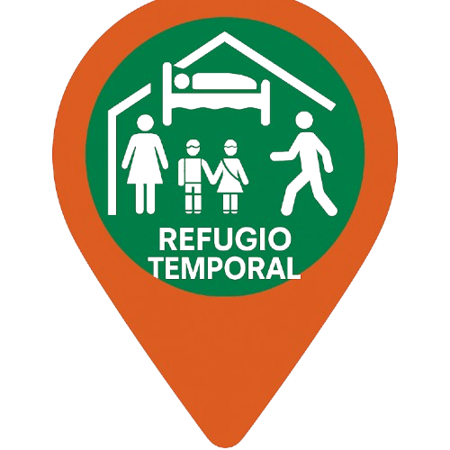

☰ Capas
Geoportal SJL
Mapas Base
OpenStreetMap
Satelital
Topográfico
Carto Light
Carto Dark
Blue Marble
Capas Temáticas
Puntos de Reunión
Buscar punto más cercano
Hidrantes
Buscar punto más cercano

Albergues
Buscar punto más cercano
Abastecimiento de Agua
Buscar punto más cercano
ACV Zona Baja
Buscar punto más cercano